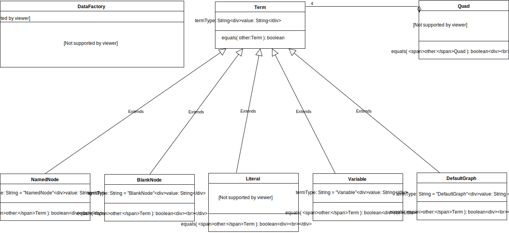

Data interfaces

Term interface
interface Term {
attribute string termType;
attribute string value;
boolean equals(Term other);
};
Term is an abstract interface.
termType contains a value that identifies the concrete interface of the term, since
Term itself is not directly instantiated. Possible values include "NamedNode",
"BlankNode", "Literal", "Variable" and
"DefaultGraph".
value is refined by each interface which extends Term.
equals() returns true if and only if other has the same
termType and the same contents (as defined by concrete subclasses).
NamedNode interface
interface NamedNode : Term {
attribute string termType;
attribute string value;
boolean equals(Term other);
};
termType contains the constant "NamedNode".
value the IRI of the named node (example: "http://example.org/resource").
equals() returns true if and only if other has
termType "NamedNode" and the same
BlankNode interface
interface BlankNode : Term {
attribute string termType;
attribute string value;
boolean equals(Term other);
};
termType contains the constant "BlankNode".
value blank node name as a string, without any serialization specific prefixes,
e.g. when parsing, if the data was sourced from Turtle, remove "_:", if it was
sourced from RDF/XML, do not change the blank node name (example: "blank3")
equals() returns true if and only if other has
termType "BlankNode" and the same value.
Literal interface
interface Literal : Term {
attribute string termType;
attribute string value;
attribute string language;
attribute NamedNode datatype;
boolean equals(Term other);
};
termType contains the constant "Literal".
value the text value, unescaped, without language or type (example:
"Brad Pitt")
language the language as lowercase BCP-47 [[!BCP47]] string (examples:
"en", "en-gb") or an empty string if the literal has no language.
datatype a NamedNode whose IRI represents the datatype of the literal.
If the literal has a language, its datatype has the IRI
"http://www.w3.org/1999/02/22-rdf-syntax-ns#langString". Otherwise, if no
datatype is explicitly specified, the datatype has the IRI
"http://www.w3.org/2001/XMLSchema#string".
equals() returns true if and only if other has
termType "Literal" and the same value,
language, and datatype.
Variable interface
interface Variable : Term {
attribute string termType;
attribute string value;
boolean equals(Term other);
};
termType contains the constant "Variable".
value the name of the variable without leading "?" (example:
"a").
equals() returns true if and only if other has
termType "Variable" and the same value.
DefaultGraph interface
interface DefaultGraph : Term {
attribute string termType;
attribute string value;
boolean equals(Term other);
};
An instance of DefaultGraph represents the default graph. It's only allowed to
assign a DefaultGraph to the graph property of a Quad.
termType contains the constant "DefaultGraph".
value contains an empty string as constant value.
equals() returns true if and only if other has
termType "DefaultGraph".
Quad interface
interface Quad {
attribute Term subject;
attribute Term predicate;
attribute Term object;
attribute Term graph;
boolean equals(Quad other);
};
subject the subject, which is a NamedNode, BlankNode or
Variable.
predicate the predicate, which is a NamedNode or
Variable.
object the object, which is a NamedNode, Literal,
BlankNode or Variable.
graph the named graph, which is a DefaultGraph,
NamedNode, BlankNode or Variable.
Triple MUST be represented as Quad with graph set to a DefaultGraph
equals() returns true if and only if the argument is a) of the same
type b) has all components equal.
DataFactory interface
interface DataFactory {
NamedNode namedNode(string value);
BlankNode blankNode(optional string value);
Literal literal(string value, optional (string or NamedNode) languageOrDatatype);
Variable variable(string value);
DefaultGraph defaultGraph();
Quad quad(Term subject, Term predicate, Term object, optional Term? graph);
};
For default values of the instance properties and valid values requirements,
see the individual interface definitions.
namedNode() returns a new instance of NamedNode.
blankNode() returns a new instance of BlankNode. If the value
parameter is undefined a new identifier for the blank node is generated for each call.
literal() returns a new instance of Literal. If
languageOrDatatype is a NamedNode, then it is used for the value of
datatype. Otherwise languageOrDatatype is used for the value of
language.
variable() returns a new instance of Variable. This method is
optional.
defaultGraph() returns an instance of DefaultGraph.
quad()returns a new instance of Quad.
If graph is undefined or null
it MUST set graph to a DefaultGraph.
Stream interfaces
Streams are used only in a readable manner. This requires only a single queue per stream, which
simplifies implementations and doesn't have performance drawbacks, compared to writeable
streams.

Stream interface
interface Stream : EventEmitter {
Quad read();
attribute Event readable;
attribute Event end;
attribute Event error;
attribute Event data;
attribute Event prefix;
};
read() This method pulls a quad out of the internal buffer and returns it. If there
is no quad available, then it will return null.
readable When a quad can be read from the stream, it will emit this event.
end This event fires when there will be no more quads to read.
error `error(Error error)` This event fires if any error occurs. The `message` describes the error.
data `data(Quad quad)` This event is emitted for every quad that can be read from the stream. The `quad` is the content of the data.
Optional Events
These events are not required, but if an implementation wishes to support such events, they should conform to these definitions:
prefix `prefix(string prefix, NamedNode iri)` This event is emitted every time a prefix is mapped to some IRI.
Source interface
interface Source {
Stream match(optional Term? subject, optional Term? predicate, optional Term? object, optional Term? graph);
};
A Source is an object that emits quads. It can contain quads but also generate them on the
fly. For example, parsers and transformations which generate quads can implement the Source
interface.
match() Returns a stream that processes all quads matching the pattern.
When matching with graph set to undefined or null
it MUST match all the graphs (sometimes called the union graph). To match only the default graph
set graph to a DefaultGraph.
Sink interface
interface Sink {
EventEmitter import(Stream stream);
};
A Sink is an object that consumes data from different kinds of streams. It can store the
content of the stream or do some further processing. For example parsers, serializers,
transformations and stores can implement the Sink interface.
import() Consumes the given stream. The end and error
events are used like described in the Stream interface. Depending on the use
case, subtypes of EventEmitter or Stream are used.
Typical use cases
- Parser:
Stream<Quad> import(Stream stream)
- Serializer
Stream import(Stream<Quad> stream)
- Transformation
Stream<Quad> import(Stream<Quad> stream)
- Store
EventEmitter .import(Stream<Quad> stream)
Store interface
interface Store {
EventEmitter remove(Stream stream);
EventEmitter removeMatches(optional Term? subject, optional Term? predicate, optional Term? object, optional Term? graph);
EventEmitter deleteGraph((Term or string) graph);
};
Store implements Source;
Store implements Sink;
A Store is an object that usually used to persist quads. The interface allows removing quads,
beside read and write access. The quads can be stored locally or remotely. Access to stores
LDP or SPARQL endpoints can be implemented with a Store inteface.
remove() Removes all streamed quads. The end and error
events are used like described in the Stream interface.
removeMatches() All quads matching the pattern will be removed. The
end and error events are used like described in the
Stream interface.
deleteGraph() Deletes the given named graph. The end and
error events are used like described in the Stream interface.